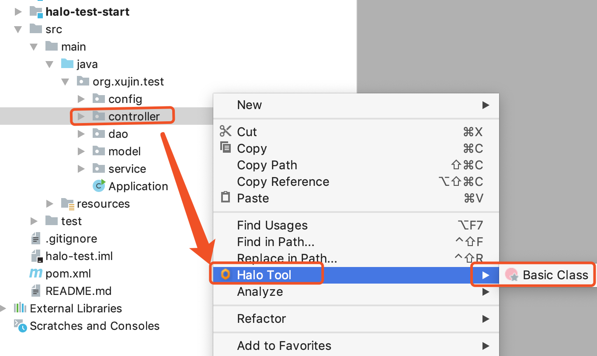

1.背景
使用IDEA或者其它IDE集成开发工具，无论写Java代码还是其它代码都需要很多右键操作，比如包上右键创建Java类，IDEA提供的包右键创建Java类，只是创建一个只有类名的空Java文件。 而Java开发有很多重复性工作，比如Controller类上面加注解，或者基于Mybatis或Mybatis Plus去生成数据对象或者Mapper都是重复性工作。此时类似的功能，就需要通过右键功能解决。本文介绍的就是包右键功能定制开发。
2.IDEA包右键
IDEA包右键,就是在所在包上面右键创建自己定制的过的文件模板，生成自己需要生成的Java类，加速开发。如下图所示:

3. 开发IDEA插件
3.1 增加扩展点到IDEA插件中
在plugin.xml中，增加Actions，如下代码所示:
<actions>
<group id="Halo Tools" text="Halo Tool" ➊
popup="true" icon="/icons/halo.png">
<add-to-group group-id="ProjectViewPopupMenu" anchor="after" relative-to-action="ReplaceInPath"/>
</group>
<!-- 创建Halo Basic -->
<action class="org.xujin.idea.right.NewBasicExeAction" ➋
id="halo.basic.class" description="Halo Basic"
icon="/icons/right/HaloBasic.png"
text="Basic Class">
<add-to-group group-id="Halo Tools"/>
</action>
</actions>
➊ 在右键分组，并设置右键位置在添加到ReplaceInPath之后后 ➋ 添加右键子分组到Halo Tools中。
3.1 开发对应的Action
右键点击之后，显示右键功能分组，点击右键分组将会触发一个Action，可以对Action定制是开会话框，还是开向导式方式创建Java类。
/**
* 右键创建Basic Action
* @author xujin
*/
public class NewBasicExeAction extends AnAction {
@Override
public void actionPerformed(AnActionEvent e) {
Project project = e.getProject();
/**
* 从Action中得到一个虚拟文件
*/
VirtualFile virtualFile = e.getData(DataKeys.VIRTUAL_FILE);
if (!virtualFile.isDirectory()) {
virtualFile = virtualFile.getParent();
}
Module module = ModuleUtil.findModuleForFile(virtualFile, project);
String moduleRootPath = ModuleRootManager.getInstance(module).getContentRoots()[0].getPath();
String actionDir = virtualFile.getPath();
String str = StringUtils.substringAfter(actionDir, moduleRootPath + "/src/main/java/");
//获取右键后的路径
String basePackage = StringUtils.replace(str, "/", ".");
NewRightContext.clearAllSet();
NewRightContext.setSelectedPackage(basePackage);
BasicActionOpenDialog dialog = new BasicActionOpenDialog(project, module);
if (!dialog.showAndGet()) {
return;
}
DumbService.getInstance(project).runWhenSmart((DumbAwareRunnable) () -> new WriteCommandAction(project) {
@Override
protected void run(@NotNull Result result) {
switch (NewRightContext.getClassType()) {
case HaloConstant.COMBOX_CONTROLLER:
createByFtl(project, moduleRootPath,"Controller.java.ftl");
break;
}
MavenProjectsManager manager = MavenProjectsManager.getInstance(project);
//解决依赖
manager.forceUpdateAllProjectsOrFindAllAvailablePomFiles();
//优化生成的所有Java类
HaloIdeaUtils.doOptimize(project);
}
}.execute());
}
/**
* 通过ftl创建 Controller
* @param project
* @param moduleRootPath
*/
private void createByFtl(Project project, String moduleRootPath, String ftlName) {
NewRightModel newRightModel= NewRightContext.copyToNewRightModel();
try {
PisFileByFreeMarkerUtil.createFile(project, newRightModel, moduleRootPath,ftlName);
NewRightContext.clearAllSet();
} catch (Exception ex) {
ex.printStackTrace();
}
}
}
更多内容请下载代码，自行Debug查看。